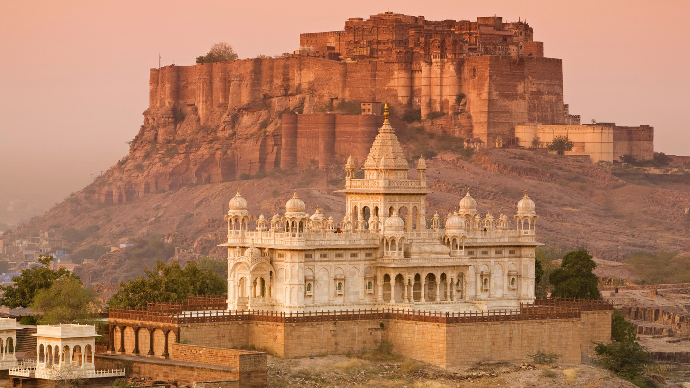

About Mehrangarh Fort
Mehrangarh Fort, located in Jodhpur, Rajasthan, India, is one of the most magnificent and well-preserved forts in the country. It is also one of the largest forts in India.
History: The fort was built in the 15th century by Rao Jodha, the founder of Jodhpur, in 1459. It is named after Mehrangarh, which means "Majestic Fort." The fort has seen several rulers and architectural additions over the centuries. Architecture: The fort is situated atop a steep hill, and its massive walls rise up to 36 meters (118 feet) in places. It is known for its imposing architecture and intricate design. The fort complex includes several palaces, courtyards, temples, and a museum. Palaces: Inside the fort, there are several beautiful palaces, each with its unique style and history. Some of the prominent palaces within Mehrangarh Fort include the Moti Mahal (Pearl Palace), Phool Mahal (Flower Palace), Sheesh Mahal (Mirror Palace), and the Zenana Deodi, which was the queen's palace. Museum: The Mehrangarh Museum within the fort displays a vast collection of artifacts, including weaponry, textiles, art, and musical instruments. It provides visitors with a glimpse of Rajasthan's rich cultural heritage.